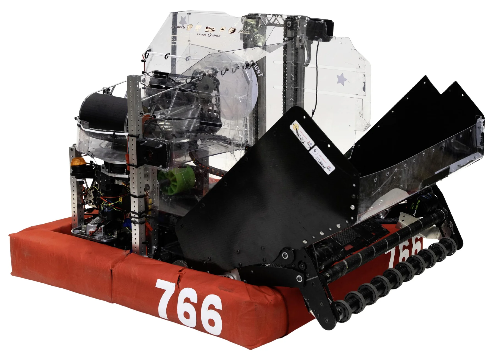

Cycloidal gearbox
I designed this for the Kraken X60. An offset input moves a lobed disc around a ring of pins, reducing speed and increasing torque.
I design and make things.
Mostly robots.

I’m a high school senior who likes robotics, playing piano, and windsurfing.
I also really like ducks.
I updated our CAM templates and cutting settings, raising feed rates from 20 to 60–120 in/min and making ribbed parts practical to machine.
This season’s finished robot weighed 100 pounds, compared with the 130–150 pounds it likely would have weighed with our previous approach.
I designed this for the Kraken X60. An offset input moves a lobed disc around a ring of pins, reducing speed and increasing torque.
An intake for the 2026 game that pivots down and uses a roller to pull game pieces into the robot.
A geared pivot mounted on an elevator carriage. The elevator sets the height; the pivot changes the arm’s angle.
Nested stages extend the elevator’s reach while rollers guide the moving frames.
A bracelet for guiding precise hand movements through touch, intended for blind users.
A camera tracks the hand and maps the scene. Using a user’s prompt, the system tries to guide their hand toward the target. Servos move compliant pads around the wrist to indicate direction and cue strength.
A fan designed to use a thermal camera to locate a person and turn its geared base toward them.
I designed the frames and vibecoded the software, experimenting with YOLO models and different haptic hardware. The idea was to recognize and count cards from a camera feed, then communicate information through touch.
A table with a motorized lazy Susan and a clutch to engage or disengage the drive.
I abandoned this project and the CAD is messy, but I really enjoyed working on it. I still think it looks cool.